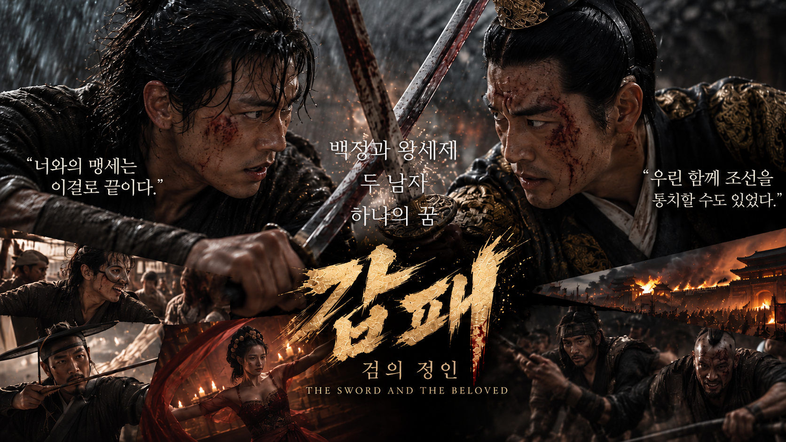
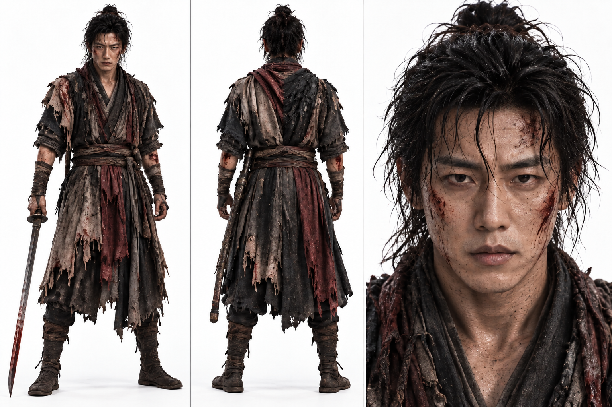
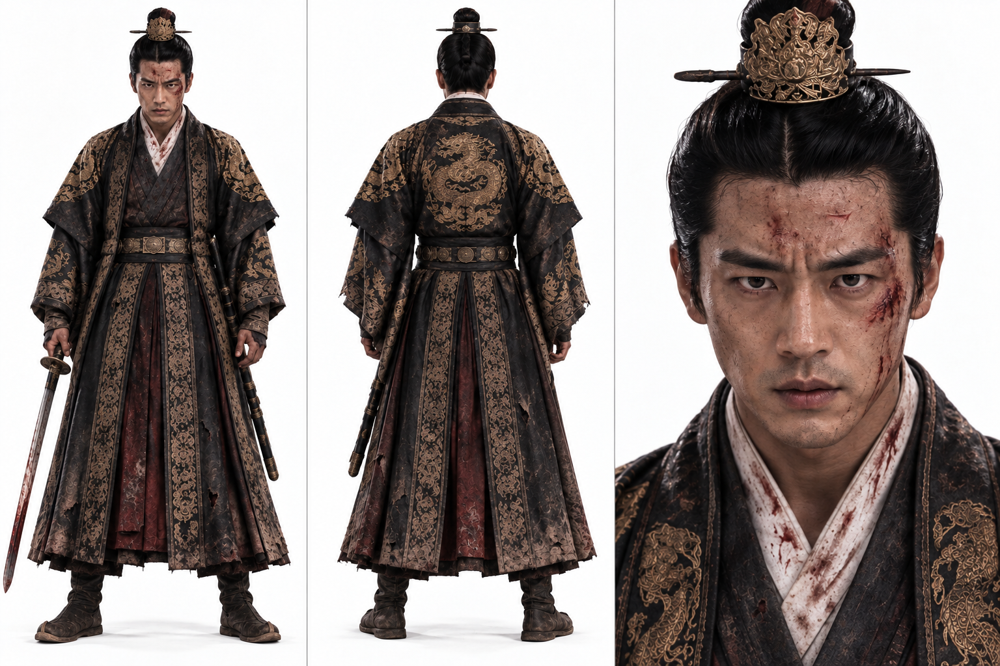
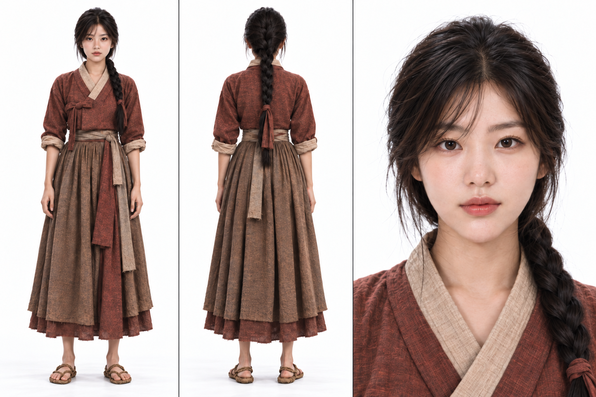
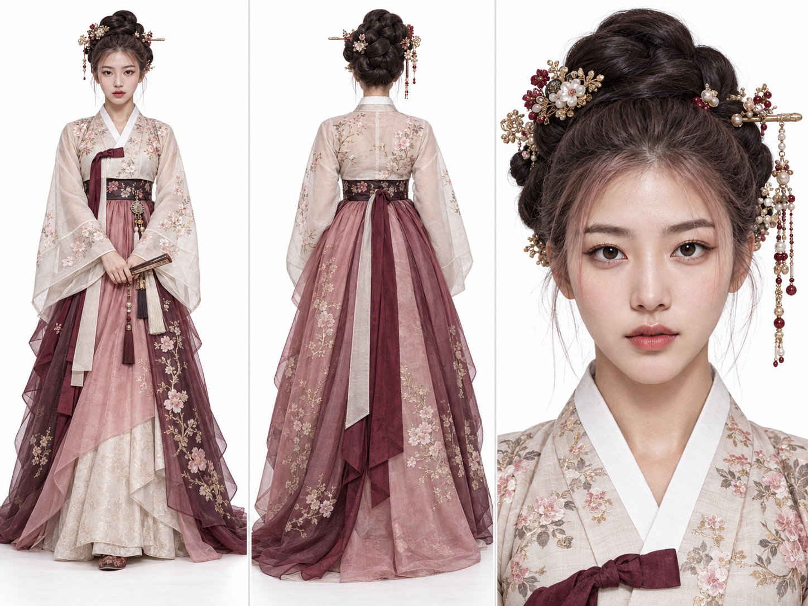
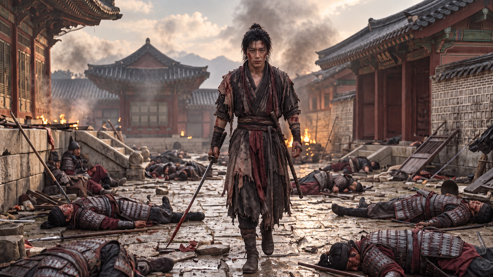
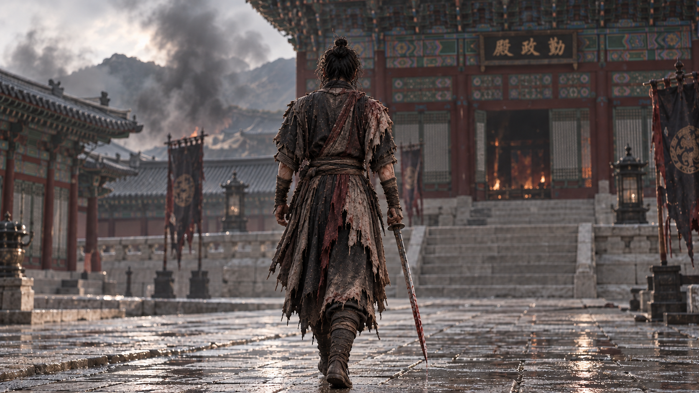
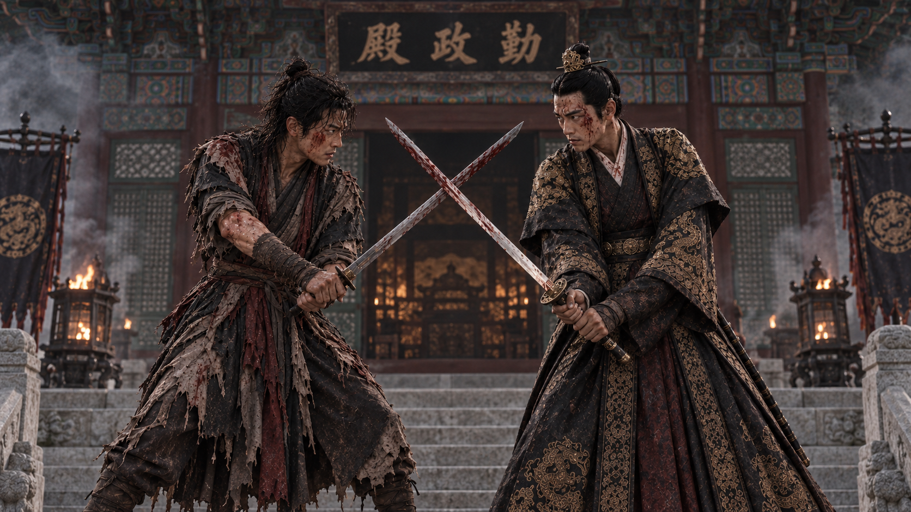
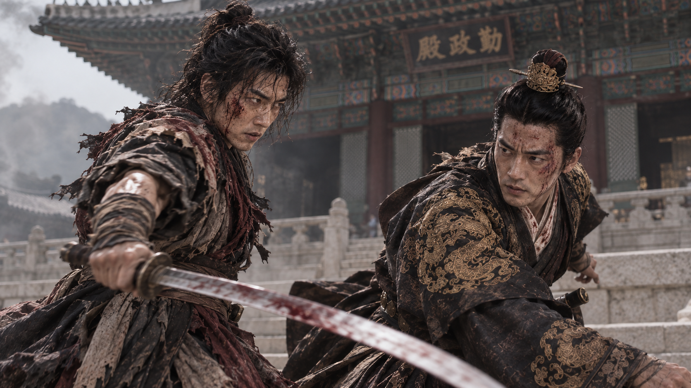
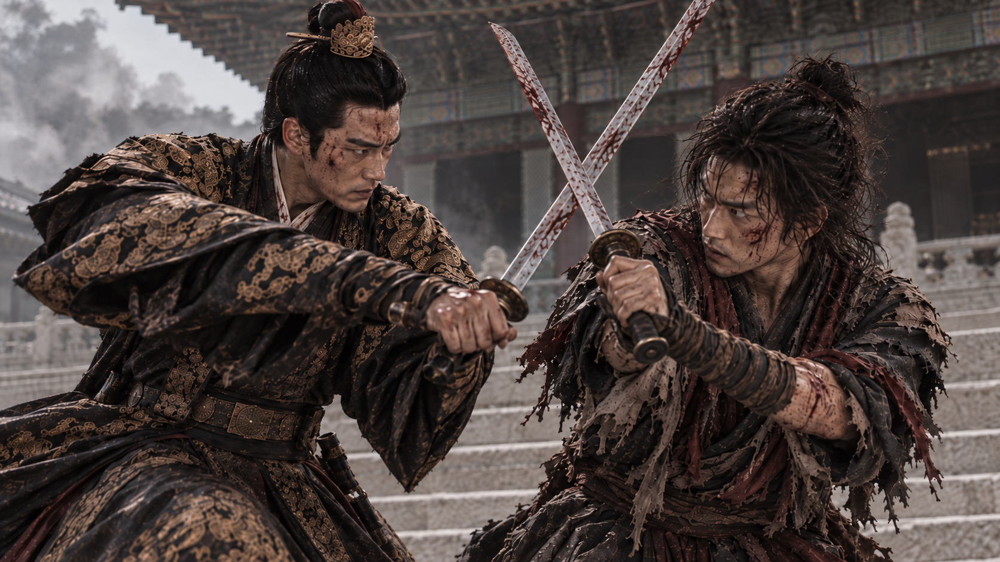

Gappae Trailer Production Log #001
Fitting a Drama into Two Minutes — Day One of the Gappae Trailer Test
September 19, 2026Cutting a Script Down to Two Minutes
Today I started turning the script of my drama Gappae into a one-to-two-minute trailer. It's the job of moving a story written in words onto a screen you can actually see.
I began with a master image. Before making any video, I wanted to pin down, in a single picture, what kind of face Gappae wears. I generated it with ChatGPT Image 2.5.
The composition goes like this. At the top, two men in their final duel: Pilbok, a baekjeong (a butcher, one of the lowest social classes in Joseon), and Yi Hyeon, the king's brother and heir (wangsejae). Below them I placed Pilbok in a performer's guise along with other characters, and in the center I set the title, "Gappae," as the anchor. The core concept is "Hallyu-style historical drama and film, non-graphic action." That concept turns out to matter a lot later.

Faces First
Next came the characters. A character has to keep the same face throughout a video, so I started with character sheets for the leads. Each sheet holds a full-body view, a back view, and a face close-up.
Pilbok the baekjeong, Yi Hyeon the royal heir, Yeosaeng the female lead, and Seol Inhyang, a gisaeng (courtesan-entertainer) and head of the Seolindan. All of them were built to match the settings in the script. From here on, every scene image is built on these sheets.




Choosing the Opening Scene
For the trailer test I picked the opening of Gappae: the final duel between Pilbok and Yi Hyeon in front of Geunjeongjeon, the main throne hall of Gyeongbokgung Palace. It is the first scene of the drama. I started generating images to fit it.
The overall tone is fusion historical drama. So the video opens not with the duel but with elegance. Yeosaeng, disguised as a gisaeng under the name Danhwi, dances in Seolhyangru, a Joseon-era tavern. That is the opening.
The Dance at Seolhyangru, and a Face That Looked Too AI
Once I had the opening image, the face bothered me. It looked too much like AI. I adjusted the character and regenerated it so the face reads as more realistic. Left is before regeneration, right is after the correction.
"Thud" — Pilbok Heads for Geunjeongjeon
Here is the rhythm I set. At the peak of the dance, a heavy "thud" sound hits, and the screen cuts to Pilbok, who has cut down the soldiers and is heading for Geunjeongjeon. It has to feel grim and resolute.

But while making scenes like this, I hit a wall. The image generator refused.
Sorry, the image you generated may violate our safeguards related to violence. If you believe this is an error, please try again or edit your prompt.
It wasn't that historical action was impossible. The generator had locked onto a certain combination of elements as violent and blocked it at the generation stage. It is especially sensitive to words that can be read as cruelty. The trouble starts when these elements pile up in a single prompt.
- A blood-stained sword
- Many fallen soldiers
- Poses that look like corpses
- Pools of blood
- Direct slashing and stabbing
- A burning building
When they all go in at once, the filter becomes hypersensitive. So from now on I will not "tone down the violence" in my prompts. I will translate it into the language of film direction. Say I want to write "Pilbok cuts down soldiers as he passes." I won't translate that literally.
Pilbok breaks through a Joseon palace corridor. He deflects the soldiers' swords and knocks their weapons aside as he advances. Fast sword strikes, twisting evasions, whip pans and motion blur, sparks flying as blade meets blade.
Written this way, the intensity of the action stays alive while direct bodily harm is reduced. The same goes for the aftermath of a battle. Instead of "corpses are strewn everywhere," I write this.
On the palace ground swept by battle, weapons and banners lie scattered, and soldiers lie fallen, unable to move.
Here is how I summarized the direction of the wording.
- Instead of direct depictions of violence → a standoff, tension, solemn resolve, the eve of a decisive battle, a dramatic confrontation
- Instead of bloodshed, corpses, or carnage → traces of battle, the aftermath of war, wounded figures, a ruined palace, smoke rising in the background
- Instead of a scene of trying to kill → the moment two people lock blades and glare at each other, a duel of fate, taut tension
Turned into prompts, the difference looks like this. The kind that can get blocked:
A scene of enemies cut down, blood everywhere, corpses scattered
The kind that goes through cleanly:
In front of a Joseon palace, in the tension right after a war, two wounded men cross swords and glare at each other. The realistic live-action tone of a Hallyu historical drama, solemn emotion, a palace background with rising smoke.
The point is not to remove the blood. It is to keep blood from becoming the star of the action. Gappae is not a gore piece anyway, so this approach fits the tone of the work. In a way, it brought me back to the "non-graphic action" concept I started with.

Before Geunjeongjeon: The Final Duel
This is the centerpiece of the trailer test. On the steps of Geunjeongjeon, the wounded baekjeong Pilbok and the royal heir Yi Hyeon lock swords. In the smoke after the war, they glare at each other in a standoff. I framed the same duel from three distances.



The Flow of Trailer 01
The final flow of Trailer 01 goes like this.
- 0–13 sec — the elegance and beauty of Seolhyangru
- From 14 sec — Pilbok amid the ruins
- After 20 sec — the palace
- 22–32 sec — Pilbok and Yi Hyeon collide head-on
- Final — the "Gappae" key art
The elegance, the hardboiled action, and the bromance and ruin of two men that I set down in the proposal all carried over into the actual video.
What Fell Short, and What to Fix Next
The shortcomings first. The dancing woman's skin still has a slightly porcelain-smooth, AI look. The two men in the second half, on the other hand, look far more like live action, thanks to their wounds and grime.
So for the final cut, I should tone down the skin highlights on Yeosaeng and add only a little fine skin texture and shadow. That should lift the consistency of the whole video.
The road to fitting a drama into two minutes is still long. But on day one, the faces and the first scene are here.